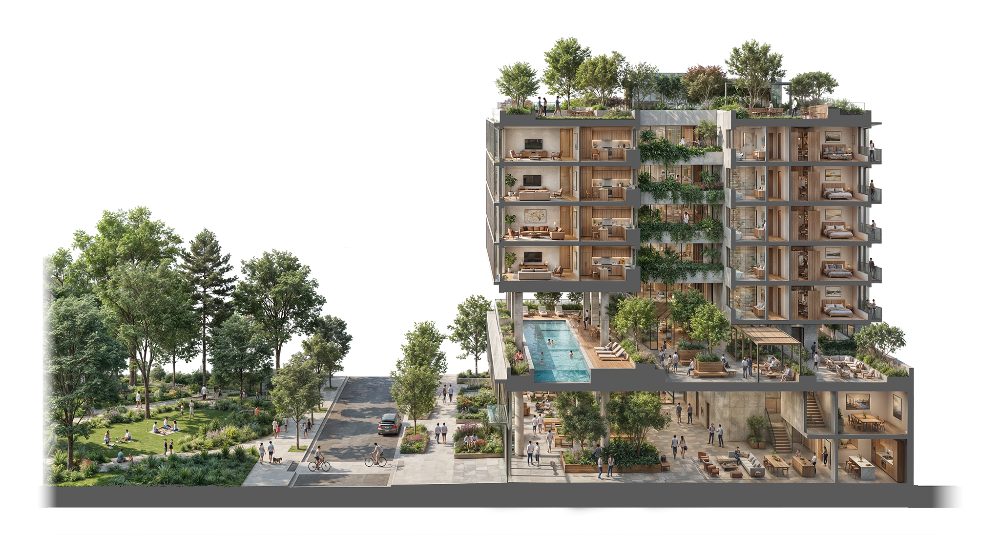
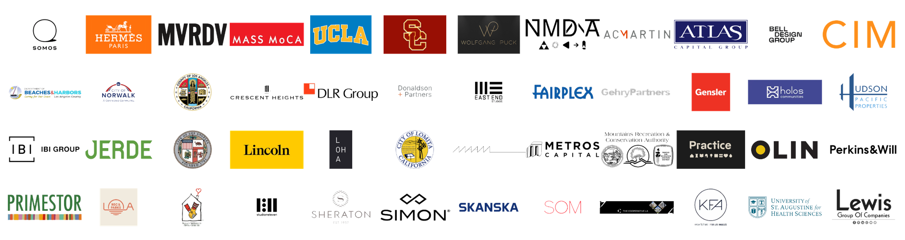

Public space is not defined by property lines or zoning codes. It is a condition: an atmosphere, a rhythm, a sequence of gestures that shapes how people inhabit the world around them.
Our ambition is to redefine publicness—not as a static zone or predetermined function, but as a living design principle, one that reveals itself in the hush of a lobby, the rustle of a planted terrace, the softness of light on a quiet rooftop. It is not bound to exterior or interior, but lives across the threshold, where landscape becomes architecture, and architecture becomes atmosphere.
This shared ethos is built on the belief that beauty is civic. The quality of a threshold, the generosity of a courtyard, the care given to materials and light—these are not finishing touches but acts of responsibility toward the people who inhabit, pass through, and belong to a place.
Whether adding a design layer to existing developments, collaborating alongside other professionals, or working as lead designers from the ground up, our partnership engages public space in its full continuity. In large-scale developments, we co-author the connective tissue of buildings—from plazas to courtyards, sidewalk to lobby, amenity levels to in-between spaces—crafting experiences that offer belonging, fluidity, and moments of stillness within the urban rhythm.

